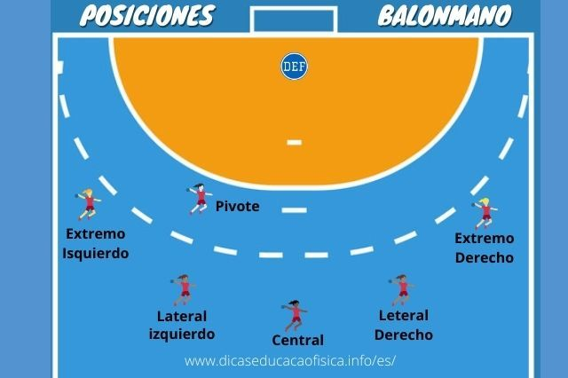

Es el encargado de evitar que el balón cruce la línea de meta. Dentro del área de portería es el único jugador que puede tocar la pelota con los pies. Requiere de grandes reflejos, agilidad y capacidad de anticipación para cortar lanzamientos a corta y larga distancia.
Se sitúan en los costados de la cancha, cerca de las esquinas. Son jugadores muy rápidos y ágiles, especializados en aprovechar los espacios reducidos para lanzar con ángulos cerrados y en ejecutar rápidos contrataques cuando su equipo recupera el balón.
Ubicados a los lados del jugador central, suelen ser jugadores de gran estatura y potente lanzamiento exterior. Su función principal es romper la defensa contraria mediante fintas, penetraciones o disparos potentes desde los 9 metros.
El central es el cerebro del equipo, organiza el juego táctico y dirige los ataques. El pivote se mueve entre los defensas rivales para abrir espacios, bloquear contrarios y recibir pases precisos para tirar a corta distancia o conseguir penales.